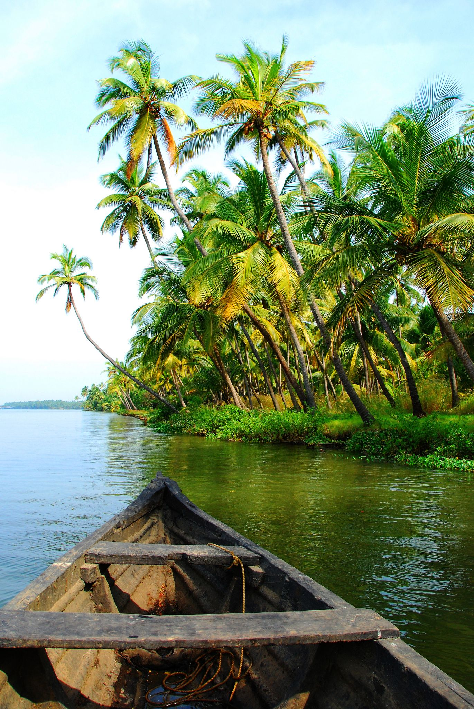

KERALA

- Kerala is known as "God's Own Country" and is a major tourist destination. It attracts visitors with its scenic backwaters, houseboat cruises, hill stations, wildlife sanctuaries, and vibrant festivals.
- Kerala is located on the southwestern coast of India, bordered by Karnataka to the north, Tamil Nadu to the east and south, and the Arabian Sea to the west
- Known for its diverse landscapes including the tranquil backwaters, pristine beaches, and lush green hills
- The capital city is Thiruvananthapuram (Trivandrum), known for its historic sites and cultural heritage.
- Other major cities include Kochi (Cochin), a major port city and commercial hub; Kozhikode (Calicut), known for its trading history; Kollam, a coastal city; Thrissur, the cultural capital; and Alappuzha (Alleppey), famous for its backwaters.
- The official language is Malayalam, one of the classical languages of India.
- Known for its spicy and flavorful dishes, Kerala's cuisine features coconut as a staple ingredient in many dishes.